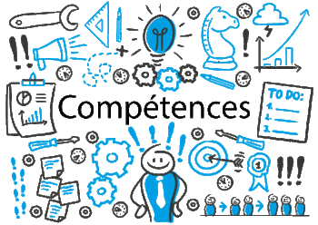

L'objectif du CV site web est de pouvoir montrer mes compétences
acquises grâce aux formations personelles que j'ai entreprises.
L'idée est de montrer la maitrise des bases essentielles à la construction d'un
site web ou d'une application mobile.
Dans un premier temps j'ai étudié les deux langages de base HTML5 et CSS3
qui m'ont permis de contruire ce site. Grâce au site OPENCLASSROOMS,
j'ai pu apprendre les bases de l'architecture WEB avant ma formation avec
l'école WEBFORCE3
Suite à l'obtention de mon Baccalauréat, j'ai entrepris des études dans le domaine du social, et plus exactement dans l'animation sociale. J'ai eu la chance d'éxercer plusieurs métiers qui m'ont permis de développer divers compétences. J'ai travaillé comme animateur en accueil de loisirs, dans l'accompagnement scolaire des jeunes (élémentaires et collégiens) en situation de décrochage. J'ai également organisé des évenements à destination de la population d'une ville (soirée dansante, fête de la ville...). J'ai enfin occupé le poste de directeur de centre de loisirs pendant plus de trois ans. Ce poste m'a apporté davantage de connaissance en matière d'animation, mais surtout des compétences managériales. J'ai ensuite entamé une reconversion professionnelle dans le domaine bancaire. J'ai été formé pendant un an au CIC au poste de conseiller accueil, puis j'ai occupé différents postes de conseiller au sein de plusieurs groupes bancaires. Je me suis ensuite formé et spécialisé dans les prêts immobiliers pour devenir courtier pendant plus d'un an. Je souhaite aujourd'hui une reconversion durable dans le monde du numérique, et plus particulièrement dans le domaine du développement web. Cela fait plusieurs années que je m'y intérèsse et j'ai décidé de me lancer avec toute la motivation et la détermination possible dans ce projet.
Mes compétences numériques
Mes compétences transversales
